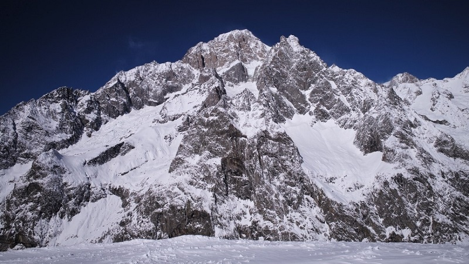
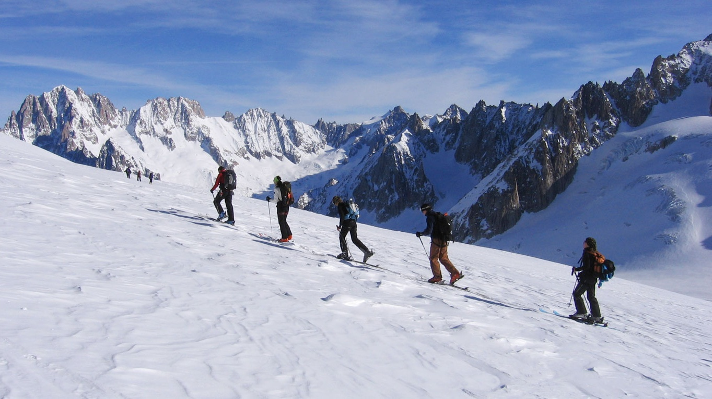
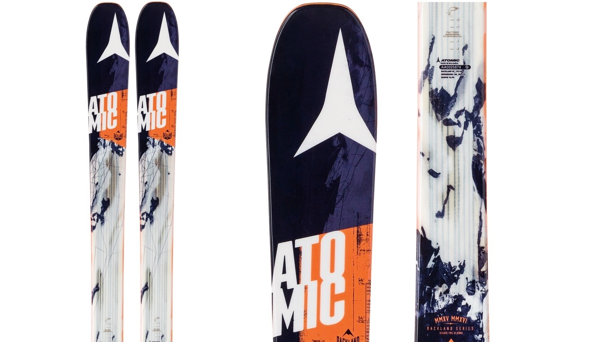
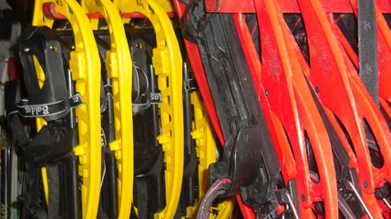
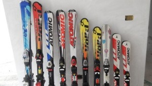

Galleria
- Il paesaggio
-

Lato della montagna vista dalla Valle.
-
Paesaggio innevato con vista sulle montagne circostanti a Courmayeur.
-
Vista della vallata in primavera.
-
Baita ai piedi della montagna.
-
Vista notturna della città ai piedi della montagna.
-
Piscina e servizi ai piedi della montagna.
- I nostri impianti
-
Impianti di risalita per raggiungere Col Checrouit.
-
Impianti a fune per la risalita di sciatori.
-
Arrivo degli impianti di risalita sulla vetta Youla.
-

Impianti di risalita in vista notturna.
-
Discesa pista rossa con vista sugli impianti.
-
Discesa pista blu con impianti.
- Le nostre attività
-
Discesa lungo la montagna con sci.
-
Discesa in snowboard lungo pista nera.
-

Ciaspolata in diurna lungo il crinale della montgna.
-
Escurione estiva sulla vetta.
-
Sentiero percorribile in mountain bike verso Mont Chetif.
-
Foto scattata durante escursione con ciaspole.
- Il nostro negozio
-
Vasto assortimento di sci noleggiabili presso il nostro negozio.
-

Nuovo arrivo di snowboard "Atomic".
-

Vasto assortimento di ciaspole noleggiabili presso il nostro negozio.
-

Tutti i marchi di scii noleggiabili.
-
Foto del magazzino di scii.
-
Il nostro negozio sempre al vostro servizio.
- Le nostre piste
-
Lezione di scii per i più piccoli.
-
Pista blu con bandiere per slalom per allenamento.
-
Vista panoramica sulla pista blu e parco freestyle.
-
Pista rossa Bertolini percorsa in scii.